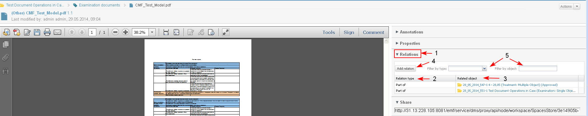

See also: "Manage 1st class System Objects Relationships".
Users are able to create relations between an added document and another primary object (document, case, iDoc, project etc.) in the system.
- The user opens a document for preview. There is a section Relations (1) with a list with related content of that document.
The existing relationships are described in a table format with the following columns:
- Relation type (2) - showing the label of the reference created between the two objects.
- Related object (3) - information for the objects with which (from/to) a the relationship is created.
- The user could also create new relationships (4), edit an existing one (clicking on its relation type) and delete a selected relationship if he/she has appropriate permissions.
The ID and the Name of the object are a direct link to open the corresponding object in preview. The link to the object is not accessible if the user, who reviews the current object, does not have permissions to the referenced one.

- The user clicks "Add relation" (1).
- The system opens a new section for selecting the "Relation type" of the new relationship. The user selects the type from a drop down list (2-3-4-5).
The object type is not a restriction. The user could create any types of relationships between two objects (documents) except parent-child relationship.
- The user clicks the button "Object picker" (6).

- The system opens the "Object picker" screen (1), where the user could search from different locations, select objects by different criteria (3) to which a relation to be created. He could:
- perform Search using different search criteria including free text "keyword" search on the content he/she has access to (using "Search" action) (2-3-4-5)
- browse the projects and libraries he/she has access to, find and select the object (using the "Browse" action)
- upload object from the local PC (using the "Upload" action)
- open "My Favorites" list with objects, and select an object (Not Ready)
- The user selects object/s (may be document/s) from the list of results from the search and clicks the button "OK" (6-7).

- The new relationship is created (1) and it is both visible in the Related Content section of the current object (document), and in the Related Content section of the linked object.
The created relationship may be deleted by selecting the corresponding button "X" (2), available for all user created relations.